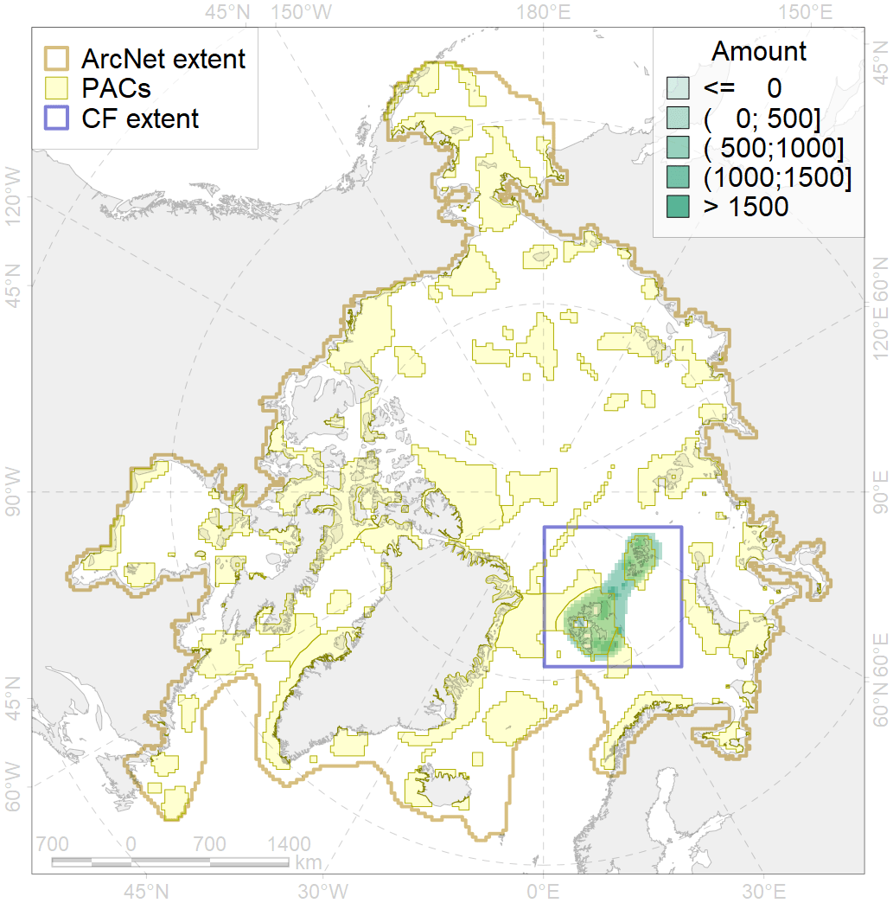
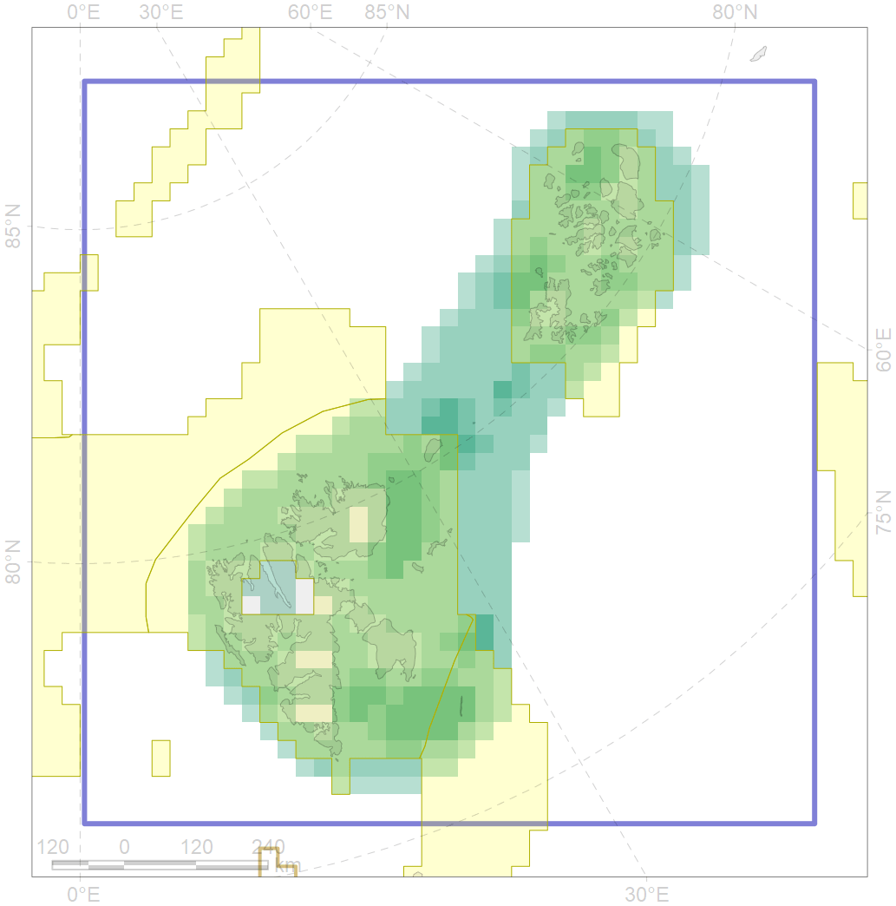

1005

| CF code | 1005 |
| CF name | Atlantic Walrus Winter Distribution in Spitsbergen and FJL region |
| Time Period | 1990-2014 |
| Source(s) | https://brage.bibsys.no/xmlui/bitstream/handle/11250/173046/Meddelelser138.pdf?sequence=1 https://www.int-res.com/articles/meps2008/375/m375p247.pdf https://www.tandfonline.com/doi/pdf/10.3402/polar.v2i1.6960 |
| Seasonality | October-June |
| Depth Horizon | 0-200m |
| Methodology | For Svalbard map created using tagging data, for Russian part - compilation available data and polynyas location. |
| Use Restrictions | Open source, except Russian Arctic project |
| Author Name | Maria Solovyeva |
| Notes | |
| Scenario’s Target | 0.276 |
| Target Achievement | 0.714 (Scenario: 258.6%) |
| PAC | Share of the Total Amount within the PAC | Share of the Target Achievement for the ArcNet | PAC’s Contribution to the Target Achievement |
|---|---|---|---|
| 22 | 21.8% | 77.3% | 29.9% |
| 29 | 0.0%0.1% | 0.0%0.2% | 0.0%0.1% |
| 30 | 42.8%44.7% | 150.8%157.6% | 58.3%60.9% |
| 31 | 5.5%7.7% | 19.0%26.4% | 7.3%10.2% |
| inner | 70.0%74.3% | 247.0%261.5% | 95.5%101.1% |
| outer | 30.0% | 11.6% | 4.5% |
| † supplement values are for area consistence whereas principal values are for Accenter compatible gridded stats |